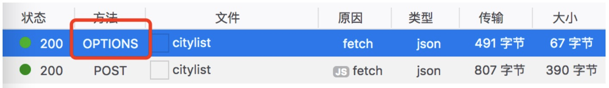
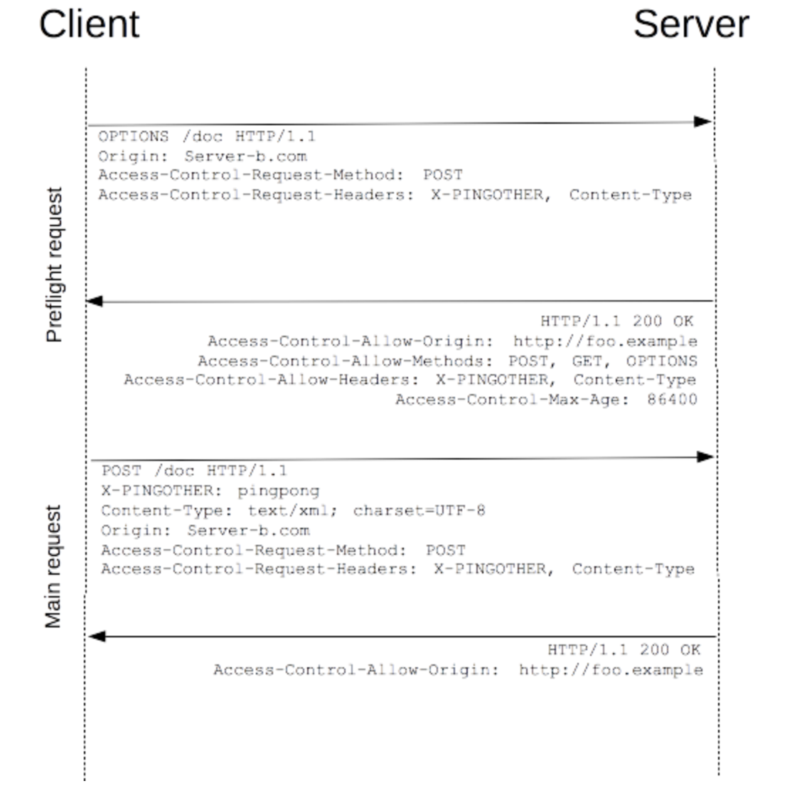

一、CORS 跨域资源共享
CORS 全称为 Cross-origin resourse sharing，即跨域资源共享，它允许浏览器向跨域服务器发送 Ajax 请求，克服了 Ajax 只能同源使用的限制。
JSONP 是绕过了同源限制，发送的也不是 Ajax 请求；CORS 直接允许浏览器向跨域的服务器发生 Ajax 请求。
CORS 简单来说就是，服务器允许你跨域访问它，客户端就可以跨域访问它；服务器不允许你跨域访问它，客户端就不可以跨域访问它。
这个方式只需要在服务器端做一些配置，客户端只需要保持原有的 Ajax 代码即可。
我们可以在服务器端增加以下代码（node.js）：
1 | response.writeHead(200, { |
注意：不论是否有这个，浏览器都会向服务器发送请求，因为浏览器并不知道这个请求是不是跨域请求。并且浏览器会接收服务器返回的内容，只不过浏览器在接收到数据返回的时候，会发现里面没有 Access-Control-Allow-Origin 并且设置为允许。那么浏览器会把请求返回的内容忽略掉，并且在命令行里报错。
也就是说，请求已经发送了，内容也返回了，只不过浏览器在解析了返回的内容以后，发现这是不允许的，所以拦截了。这是浏览器提供的功能。例如我们使用 url 发送请求，它是没有跨域的概念的，任何的请求都是可以发出并且拿到返回的内容。
二、CORS预请求
在发送 CORS 请求时，浏览器检测到跨域请求，会自动发出一个 OPTIONS 请求来检验本次请求是否被服务器接受。服务器接收到该预请求之后，就会返回与 CORS 相关的响应头。服务器通过了 CORS 跨域请求后，客户端才会发送正式的数据。
所以整个请求过程其实是发生了两次请求：预请求、实际数据请求。可以参考下图：
一个 OPTIONS 请求一般会携带下面两个与 CORS 相关的头：
Access-Control-Request-Method：本次预检请求的请求方法Access-Control-Request-Headers：本次请求所携带的自定义首部字段
服务端收到该预请求后，会返回与CORS相关的响应头，主要会包括下面几个：
Access-Control-Allow-Origin：服务器允许的跨域请求源Access-Control-Allow-Methods：服务器允许的请求方法Access-Control-Allow-Headers：服务器允许的自定义的请求首部字段Access-Control-Max-Age：服务器允许以这种方式发生跨域请求的最长时间（单位为s），这段时间内不需要再发送预请求进行验证，可以直接发送正式的请求
注意：
1）在上面的两次请求中，预请求只是一个检查的过程，它不会携带任何请求的参数；预请求通过后的请求才会真正的携带请求参数与服务器进行数据通信。
2）若服务器对预检请求没有任何响应，那么浏览器不知道服务器是否支持CORS而不会发送后续的实际请求；若服务器不支持当前的跨域访问，浏览器也不会发送后续请求。
发生预请求的条件
预请求并不是 CORS 请求的必须过程，在满足一定条件下是不需要发送预请求的。判断预请求发生的条件：是否是简单请求。如果是简单请求，则会直接发送具体的请求而不会发送预请求。具体来说：
满足下面的所有条件就不会产生预检请求，即该请求是简单请求：
- 请求方式是 GET、HEAD、POST中的任意一个
- Content-Type 的值必须是 test/plain、multipart/form-data、application/x-www-form-urlencoded中的任意一个
- 必须是以下定义对CORS安全的首部字段集合，不能是集合之外的其他首部字段：Accept、Accept-Language、Content-Language、Content-Type、DPR、Downlink、Save-Data、Viewport-Width、Width
满足上面所有的请求才不会发送预请求。在实际项目中我们的请求格式可能是 application/json 格式编码，或者使用自定义请求头，这样都会触发CORS的预请求。
发送预请求的实例：
1 | var xhr = new XMLHttpRequest(); |
上面请求中在请求中添加了自定义首部字段 X-PINGOTHER，并且请求的 Content-Type 值 application/xml。因此该请求首先会触发一个预检请求。具体的过程见下图：
通过上图可以看到浏览器实际与服务器产生了2次交互，最后一次会将请求参数传给服务器。这样一个 CORS 请求过程就完成了。